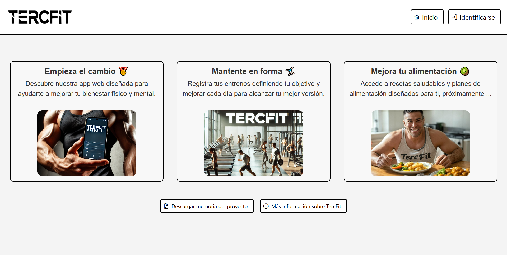
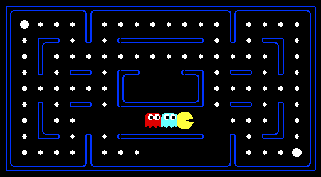
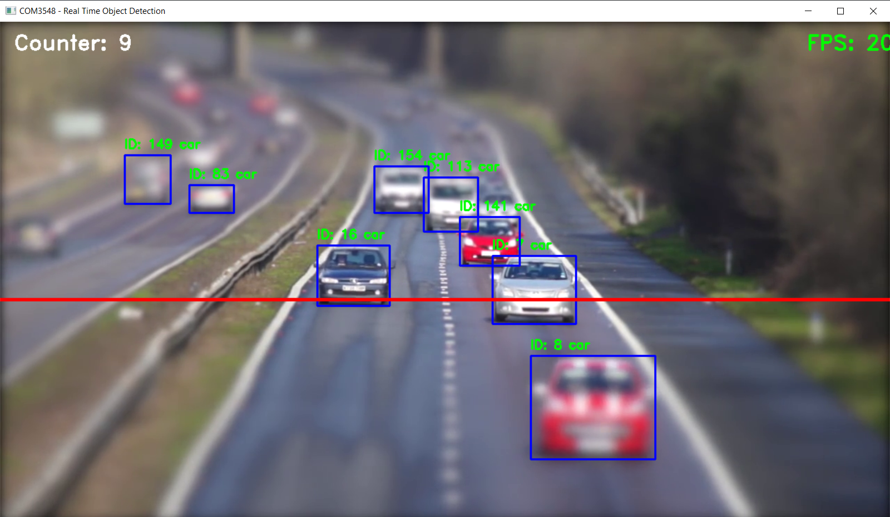
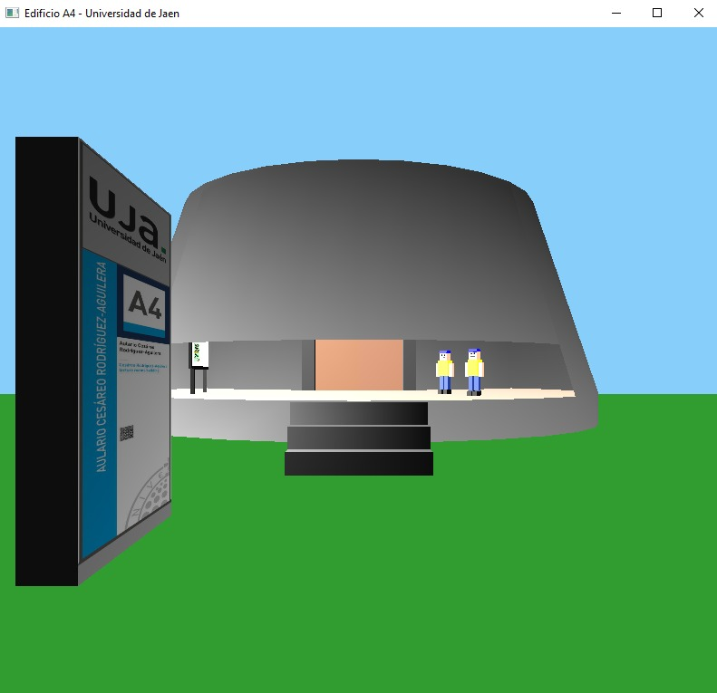

Aficionado a la informática desde pequeño
Siempre me ha encantado trastear con ordenadores y dispositivos, lo que me hizo estudiar el grado de Ingeniería Informática.
Durante mi formación estoy adquiriendo una comprensión integral de los principios de la informática y desarrollando habilidades sólidas en programación. He trabajado con Python, Java y C++, y tengo experiencia con Git, bases de datos SQL y desarrollo de aplicaciones web.
He participado en proyectos para recrear en 3D un edificio de la Universidad de Jaén, implementar búsquedas y teoría de juegos con IA en Pacman y desarrollar una webapp de bienestar personal para el gimnasio.
Mi objetivo es seguir creciendo profesionalmente en un entorno que me desafíe y me permita aportar mis habilidades al desarrollo de soluciones innovadoras.
Proyectos

TERCFIT
Aplicación web para el bienestar personal.

Pacman
Implementación de búsquedas y teoría de juegos.

Detección de objetos
Detección en tiempo real con YOLOv8 y OpenCV.

A4 Building
Recreación del edificio A4 de la Universidad de Jaén con OpenGL y C++.